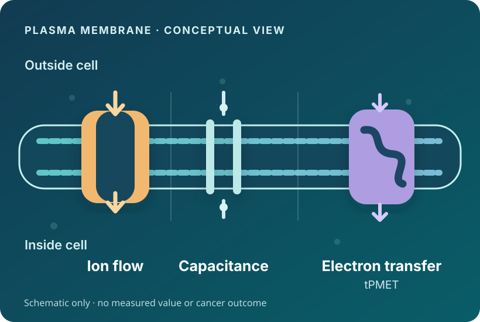

Virtual research laboratory / model v1.0
Bioelectric circuitry
with TPMET
Explore membrane charging, ion conductance and trans-plasma-membrane electron transfer. Turn virtual perturbations into falsifiable experiments.

Exploratory research tool
This website supports literature exploration, physical circuit simulations and hypothesis generation.
- Illustrative defaults. Simulator parameters have not been calibrated against matched cancer-cell experimental data.
- Unvalidated cancer-outcome hypotheses. The tool does not provide validated predictions of cancer growth, death or treatment response.
- Unscreened, non-exhaustive literature collection. Repository records are search results awaiting relevance screening. The collection is not an exhaustive systematic review.
- Documented methods. Sources, equations, units, assumptions and the model version are available below.
Circuit model passive-tpmet-circuit-1.0 · Research-status documentation revision 1 · 2 November 2026. Numerical checks establish implementation consistency, not biological validation.
Equations and assumptions · Primary sources · Download model documentation · Literature search log
Exploratory physical model. Defaults are illustrative, not extracted cancer-cell measurements. Literature supports the mechanisms; it does not calibrate these parameter values or establish accuracy across cancers. Growth, death and redox signalling remain experimental hypotheses.
Start here
- Enter measured parameters for one cell type and condition. Record their source below.
- Select Set comparison baseline, then change one parameter. The comparison table updates automatically.
- Inspect voltage responses and hypothesis cards. Use the compensation sweep to expose a major uncertainty.
- Export your experiment record before leaving. Parameters and notes are held only in this browser page; refreshing resets them.
1. Define your circuit
TPMET branch
J is direct electron flux per cell, not total extracellular reductant production. η is the fraction left uncompensated by other charge movements; 0 means fully compensated, 1 means uncompensated. This lumped approximation does not model proton-channel kinetics.
Injected current stimulus
Positive applied current is inward conventional current. A sinusoid uses the absolute amplitude. This is current injection, not an applied field in V/cm.
2. Read the physical response
Parallel branches share the same voltage V = inside − outside.
Finite current pulse
Starts at the TPMET-inclusive resting equilibrium; pulse lasts 5τ, followed by 5τ recovery. Time axis adapts to the current circuit.
Sinusoidal current: steady state
3. Compare & test uncertainty
| Quantity | Baseline | Current | Change |
|---|
Charge compensation sweep
Same electron flux and ionic circuit, varying η. These are scenarios, not confidence intervals.
| Uncompensated fraction η | Net TPMET current (pA) | Resting voltage (mV) |
|---|
4. Generate testable hypotheses
Export includes the model version, equations, assumptions, citations, baseline and timestamp. It is not a preregistration or a claim of scientific novelty.
Mathematics & boundaries
Cₘ dV/dt = −Σ gᵢ(V − Eᵢ) + Iapp + ITPMET
ITPMET = s × 96.48533212 × η × J
C in pF; g in nS; V and E in mV; time in ms; currents in pA; J in fmol electrons per second per cell; s = +1 for outward electrons, −1 for inward electrons. The conversion follows Faraday's constant, 96,485.33212 C/mol. Exporting negative charge is an inward conventional current.
G = Σgᵢ; Vrest = (ΣgᵢEᵢ + ITPMET)/G; τ = Cₘ/G; fc = 1000G/(2πCₘ)
V∞,step = Vrest + I/G; |ΔVsin| = |I| / √[G² + (2πfCₘ/1000)²]
During a step: V(t) = Vrest + (I/G)(1 − exp(−t/τ)); after removal the excursion decays exponentially. Sinusoidal voltage lags the current by arctan(2πfCₘ/1000G).
- Single isopotential compartment; fixed conductances, fixed reversal potentials and constant TPMET flux. No channel gating, concentration depletion, pumps, enzyme kinetics, gap junctions or tissue geometry.
- η lumps charge compensation. Do not also count the same compensating current in an explicit proton branch.
- Extracellular acceptor reduction can reflect released mediators such as ascorbate. It cannot be converted to direct membrane electron flux without resolving the mechanism, stoichiometry and cell normalization.
- ECa − V is only a calcium driving-force proxy, not a prediction of calcium concentration or channel opening.
- No validated mapping from voltage or TPMET to ROS, NAD(P)H, proliferation or apoptosis. No electric-field coupling, electroporation, TTFields or nanosecond-pulse treatment model.
Primary literature underpinning the design
Mechanistic anchors, not a systematic review or parameter-fit dataset. The older foundational papers are included separately from the repository's 20-year window.
- Hodgkin & Huxley (1952): membrane current balance and parallel electrical components. This simulator uses a passive approximation, not the full Hodgkin–Huxley model.
- DeCoursey et al. (2003): measured NADPH oxidase voltage dependence and proton compensation in phagocytes. Supports electrogenic coupling, not cancer-specific parameters.
- Sherman et al. (2019): lung cancer models showed different contributions from ascorbate shuttling and direct Dcytb-associated electron transfer. Motivates separating assay signal from direct electron current.
- Inhibition of trans-plasma membrane electron transport: a potential anti-leukemic strategy (2010): studied tPMET activity, proliferation and NAD(P)H fluorescence in human myelogenous leukemic cell lines.
- Asadipour et al. (online 2023; issue 2024): reported stimulus-dependent tPMET assay changes in H9c2 and 4T1-luc cells under nanosecond pulses. Does not provide an interchangeable current-injection calibration.
For a publishable model: extract compatible quantitative data, fit parameters with uncertainty, validate on independent experiments and report competing explanations. Literature coverage alone does not establish predictive accuracy.